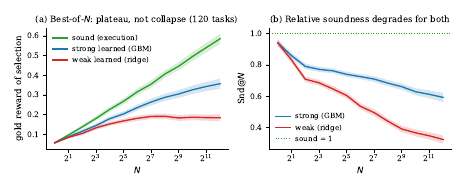
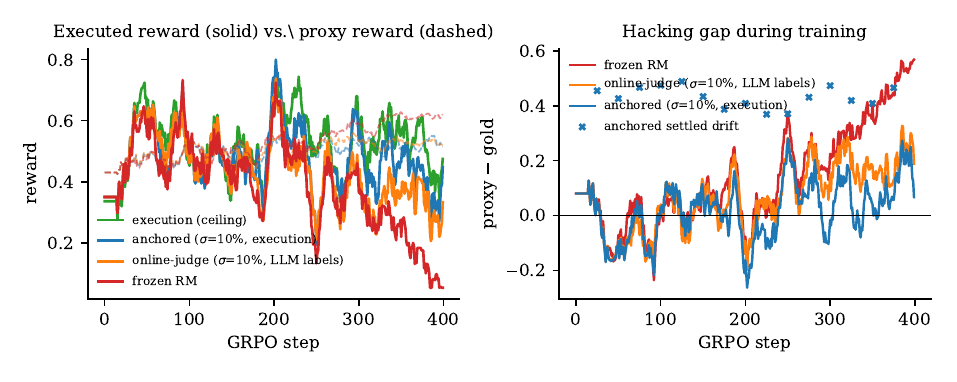
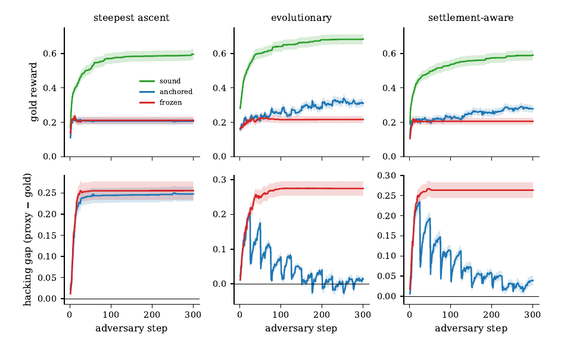

Papier hybride position + proof-of-concept : il pose que la contrainte limitante du RL sur traces de raisonnement est le verification gap (pas de vérifieur sain, bon marché et incorruptible hors des domaines formels), prouve dans un modèle gaussien de best-of-N que la corrélation vérifieur↔gold ρ est le taux de change compute↔capacité, puis montre — sur deux DSL synthétiques, du code MBPP réel, de vrais juges LLM et un run GRPO réel — qu'un vérifieur gelé se fait Goodharter tandis que le même vérifieur refité périodiquement sur un flux de labels réglés par l'exécution (« reality-settled ») préserve la reward réelle.
Claim principal, précisément : à classe de modèle de reward identique, à cadence de refit identique et à budget de labels identique (10 %), remplacer la source des labels (exécution réelle vs estimation d'un juge LLM) vaut +0,109 de reward exécutée sous GRPO, et geler le RM en coûte 90 % (0,617 pic → 0,063) [Tab. 4, §7.2].
⚠️ Deux avertissements structurels, avant toute lecture des chiffres :
1. Le papier falsifie lui-même sa propre théorie et le dit dans l'abstract : H1b et H1c sont des fail pré-enregistrés — le taux de change ρ n'est pas quantitativement prédictif hors du modèle gaussien, et la forme fermée N^{1/ρ²} surestime la pénalité jusqu'à 24× aux budgets pratiques [§6, Fig. 8b]. C'est la rare honnêteté du papier, et c'est aussi ce qui vide sa section théorique de valeur opérationnelle.
2. Aucun code, aucun registre. « Pre-registered » apparaît 9 fois ; aucun lien, aucun horodatage vérifiable. Sur ce corpus, c'est exactement l'indice qui déclenche une vérification (cf. CLAUDE.md, Mode vérification) — et ici le registre est introuvable.
Quatre suites expérimentales distinctes, de plus en plus réelles. Il n'y a aucun pipeline de données au sens d'un env RL : pas de curation humaine, pas de filtrage pass@k, pas de curriculum, pas de SFT.
A(+1), S(−1), D(×2), T(×3), N(−v), Q(v²) ; exécution avortée si |v|>10⁶.x ∈ {−3,…,4} sont toutes définies et prennent plus de 2 valeurs distinctes. Gold reward = fraction des 8 paires I/O matchées à l'exécution.H=div2, P=v+x, M=v mod 7, G=max(v,0)) ; longueur 1–10 ; |v|>10⁹ ⇒ invalide. ~10¹⁰ programmes.x ∈ {−8,…,7}, cibles de longueur 6 valides sur toutes les entrées avec >3 sorties distinctes. Programme aléatoire = 0,018 de gold.claude-haiku-4-5, 32–48 échantillons/problème ; deux juges LLM qui notent le code sans l'exécuter ; gold = exécution locale des suites de tests de MBPP et HumanEval.claude-haiku-4-5 et Qwen2.5-1.5B est le cas d'école de la contamination de pré-entraînement ; aucune analyse, aucun hold-out propre (cf. §7, case eval).⚠️ Il n'y a pas d'environnement RL au sens de ce corpus. Ni outils, ni multi-turn, ni sandbox agentique, ni contexte long, ni compaction, ni reset, ni timeouts d'outils. Ce qui existe :
C'est le cœur du papier, et le seul endroit où il est fort.
| Rôle | Instanciation | Où |
|---|---|---|
| gold / sound | exécution du programme sur 8 (MinimalDSL) ou 16 (RichDSL) paires I/O ; tests unitaires réels (MBPP/HumanEval) | partout |
| proxy faible | ridge α=1 sur 43 features (6 unigrammes, 36 bigrammes, longueur), 1 000 labels aléatoires/tâche ; RichDSL : ridge α=1 sur 111 features, 2 000 labels/tâche, ρ≈0,50 en held-out |
§5, §6 |
| proxy fort | HistGradientBoostingRegressor, 100 itérations (60 dans la boucle H3), 359 features (indicateurs positionnels, 128 trigrammes hachés, one-hots premier/dernier), ρ≈0,77 |
§6 |
| juge LLM faible | claude-haiku-4-5, note le code sans l'exécuter |
§7 |
| juge LLM fort | claude-sonnet-4-6, idem |
§7 |
| RM de la suite GRPO | ridge sur features de surface + AST, fit sur 1 600 échantillons exécutés du base model | §7.2 |
⚠️ Aucun prompt de juge, aucune rubrique, aucune consigne de notation n'est recopié. Pour un papier dont la thèse centrale est « ne faites pas confiance aux juges », l'absence totale du prompt des deux juges LLM est un trou de reproductibilité majeur.
Non, et c'est la lacune méthodologique centrale. Le papier ne rapporte jamais FPR et FNR séparément, avec dénominateurs distincts. Il rapporte à la place trois quantités de son invention :
Snd@N (Soundness-under-Pressure) [Déf. 1, §8] :
Snd@N = E[G(x^V_N)] / E[G(x^G_N)] — gold obtenu par le candidat choisi par le proxy parmi N tirages i.i.d., divisé par le gold obtenu par le candidat choisi par le gold lui-même parmi les mêmes N tirages. Score du benchmark = aire sous Snd@N en log N.
⚠️ C'est une mesure relative et normalisée par un oracle, pas un taux d'erreur. Trois conséquences qu'il faut avoir en tête avant de lire « 0,94 → 0,32 » : (i) le plafond vaut 1,00 par construction ; (ii) Snd@1 = 1,00 trivialement (un seul candidat, les deux « sélectionnent » le même) ; (iii) le dénominateur croît en √(2 ln N) alors qu'un vérifieur de qualité constante garde un numérateur borné ⇒ Snd@N décroît mécaniquement avec N même sans aucune dégradation du vérifieur. Les auteurs le reconnaissent à mots couverts (« pressure is increasingly wasted, even when it is not inverted », §6) mais ne tracent jamais le plancher de sélection aléatoire.|proxy − gold| sur les candidats sélectionnés.proxy − gold. ⚠️ Les auteurs découvrent eux-mêmes que cette statistique est mal posée : « the gap statistic conflates ranking with calibration » (F3), et RL3c « passed for the wrong reason » parce que ces juges sous-évaluent tout (gap moyen −0,20) [§7]. Leçon de process qu'ils tirent : register criteria on |error|.Le livrable seul, partout. Les juges LLM notent du code sans l'exécuter ; le RM note la complétion. Aucune notation de trace. Le papier n'a donc rien à dire sur cette tension du corpus — sauf par la négative : son paradigme proposé (claims typés, pricés, réglés) est précisément une proposition de notation de la trajectoire, et elle n'est pas implémentée.
Trois régimes d'« optimisation », dont un seul est du RL.
Pas de politique, pas de gradient. L'« optimisation » est l'échantillonnage puis l'argmax, ou un hill-climber. Pression ∝ log N.
σ=10 % des rollouts de la fenêtre, réglée par exécution ⇒ 15 refits sur 400 steps.Dérisoire et c'est un argument des auteurs : < 10 min CPU pour toute la suite 1, ~75 min CPU pour la réplication, GRPO sur un seul Apple M1 16 Go, mesure Snd@N des deux juges sur deux benchmarks ≈ 3,5·10⁴ appels API, « tens of dollars ».
| # | Comportement | Détection | Correction | Correction évaluée ? |
|---|---|---|---|---|
| 1 | Goodharting i.i.d. : le proxy monte, le gold pique puis chute (MinimalDSL : gold 0,079 → pic ~N=512 → 0,104 à N=2048, proxy monte tout du long) | Snd@N, gold loggé |
settlement (refit sur labels exécutés) | oui — Fig. 4 : gold 0,154→0,306 anchored vs 0,154→0,125 frozen |
| 2 | Capture adversariale : le hill-climber sature le proxy en ~15 steps et se verrouille sur un optimum hacké (gold plat à 0,178, gap +0,037) | hacking gap | settlement tous les 25 steps | oui, partiellement — gap inversé à −0,101 en toy, mais non reproduit à l'échelle (gaps ancrés ≈ 0, pas négatifs) |
| 3 | Effondrement sous GRPO : reward exécutée 0,617 → 0,063 (−90 %) pendant que le proxy monte 0,442→0,615 ; complétions dégénérées ~17 tokens | reward oracle loguée en parallèle | refit 10 % settled | oui : 0,397 (6,3× frozen), mais 1 seed |
| 4 | La sélection seule fabrique la tromperie (F3) : pas besoin d'un générateur déceptif | minage post-hoc des banques de candidats | aucune — c'est un constat | n.a. |
| 5 | La recalibration moyenne est tail-perverse (F4) : une carte isotone juge→gold coupe l'erreur de pricing de 29,9 % mais amplifie la queue surévaluée (gap des tromperies minées 0,52 → 0,76) | décomposition queue vs moyenne | « le settlement model doit être au moins aussi expressif que la surface de tromperie » | oui — seule la tête à features aide sur les deux métriques [Tab. 3] |
| 6 | L'alarme de drift ne voit pas ce qu'elle répare (R-D, fail) : Spearman 0,06 entre drift réglé et hacking gap concurrent sur 15 refits (critère préenregistré ≥ 0,50) ; variante cross-arm −0,40 (p=0,14), sans excuse de restriction d'étendue | — | aucune | non — la prédiction 4 du papier est « already under adverse pressure » de son propre aveu |
| 7 | Settlement ≠ capacité : l'ancrage réduit mais ne ferme pas l'écart de capacité au vérifieur sain (0,28–0,31 vs 0,59–0,68 sous pression adversariale). « A shallow feature model remains shallow. » | — | axe orthogonal (force du vérifieur) | mesuré directement (H2b, RL1b) |
| 8 | Meta-reward hacking du substrat : exploits de sandbox, manipulation de l'environnement mesuré, délai stratégique du settlement, staking uniquement des claims faciles à régler | aucune | TCB déclaré + mitigations proposées (environnements randomisés, audit par re-settlement d'une fraction aléatoire, limites de latence de settlement) | non — purement déclaratif |
| 9 | Vagueness (objection standard aux rewards par settlement) | décomposition de Brier (reliability vs resolution) | scoring rules strictement propres | oui — resolution +98 % (toy) / +70 % (échelle) ; mais ne teste pas un agent qui choisit quels claims staker |
⚠️ Ajout propre à ce mémo, non relevé par les auteurs : le failure mode n°5 et le n°6 pris ensemble disent que le settlement répare sans savoir qu'il répare. En pratique, cela interdit la ligne 10 de l'Algorithme 1 (adapter le taux de settlement au drift mesuré) — c'est-à-dire le seul mécanisme de maîtrise du coût du paradigme. Le papier vend un taux de settlement adaptatif et mesure que le signal qui le pilote est du bruit.
Snd@N : 3,5·10⁴ appels API pour 2 juges × 2 benchmarks, « tens of dollars ».Tous les chiffres de l'abstract et de l'introduction, un par un.
| # | Chiffre annoncé | Source dans le corps | Verdict |
|---|---|---|---|
| 1 | « ρ est le taux de change exact compute↔capacité » | Prop. 1, §3, preuve présente (4 lignes : décomposition G=ρP+√(1−ρ²)Z, i* fonction de P seul ⇒ E[Z_{i*}]=0) |
sur-généralisé — exact dans la classe gaussienne i.i.d. ; H1c est un fail préenregistré hors de cette classe (cf. #14) |
| 2 | « pénalité polynomiale N^{1/ρ²} » |
Cor. 1, §3, preuve présente (1 ligne : ρ√(2 ln N')=√(2 ln N)) |
sur-généralisé — asymptotique seulement ; H1b fail : surestime de 8 à 24× à ρ=0,5, N ∈ {4,8,16} [Fig. 8b]. La forme exacte finie-N prédit à 3,4 % |
| 3 | « simulation vs théorie à 0,011σ » | Fig. 1 (20 000 essais/point, N≤2¹², ρ∈{0,2;0,5;0,8;1,0}) | confirmé |
| 4 | « 0,007σ sur 100 000 essais » | Fig. 8a (N≤2¹⁴, ρ∈{0,1…1,0}) | confirmé |
| 5 | « à N=4096, le vérifieur ρ=0,5 réalise 50,2 % du gain du vérifieur sain » | Fig. 1 (légende) | confirmé, dans la simulation gaussienne uniquement |
| 6 | « 0,94 → 0,32 pour un vérifieur shallow à N=4096 » | Fig. 9b, RichDSL, 120 tâches, pools 4 096, N≤2¹², 8 répétitions de sous-échantillonnage par point | confirmé — mais c'est Snd@N (relatif) du ridge ρ≈0,50, pas une performance absolue. Le GBM fort fait 0,94 → 0,59 sur la même figure |
| 7 | « effondrement absolu dans le petit domaine » | §5 R1 : gold 0,079 (N=1) → pic ~N=512 → 0,104 (N=2048), proxy monte ; Tab. 1 : Snd@N 1,00 / 0,64 / 0,40 / 0,31 / 0,13 |
confirmé |
| 8 | « plateau dans le domaine riche » | §6 (H2a fail) : gold faible pic 0,191 à N=256 → 0,184 à N=4096, déclin non significatif (p=0,25) | confirmé — et c'est une falsification du claim général « sufficient pressure inverts any surface verifier » |
| 9 | « un vérifieur sain s'améliore de façon monotone » | H2c pass ; MinimalDSL : 0,079 → 0,831 à N=2048 ; RichDSL : sound monotone (Fig. 9a, ~0,60 à N=4096) | confirmé |
| 10 | « le settlement ancré bat le vérifieur gelé sous pression i.i.d. et adversariale » | H3 pass : faible 0,312 vs 0,180 (p=2,7·10⁻⁹, 120 tâches) ; fort 0,358 vs 0,272 (p=5,5·10⁻⁶, 60 tâches) ; drift −12 % / −44 % (p<10⁻⁷) | confirmé |
| 11 | « driving the hacking gap from ~0,27 to ~0 » (contre les trois adversaires, settlement-aware compris) | §6 : frozen ~0,26–0,28 ; settlement-aware 0,039 vs 0,264 (p<10⁻¹⁵) ; gold 0,279 vs 0,206 (p=4,0·10⁻⁶) | CONTREDIT pour un adversaire sur trois. ⚠️ Fig. 11, panneau bas-gauche (steepest ascent) : le gap ancré reste à ~0,245, collé au frozen ~0,255. Le texte ne déclare l'échec de cette cellule que sur le gold (0,207 vs 0,211, p=0,46) et écrit malgré tout « drives the gap to ~0–0,04 against all three ». Les deux valeurs : ~0,04 (settlement-aware, dans le texte) vs ~0,245 (steepest ascent, dans leur propre figure) |
| 12 | « on-policy settlement ~10× plus label-efficient que le labeling aléatoire » | Toy (R4) : 150 on-policy (0,617) > 1 500 random (0,595), on-policy 0,500→0,706 vs random 0,531→0,595. Échelle (H5 pass, 80 tâches) : S=300 on-policy > S=3000 random (p=3,7·10⁻⁴), R²=0,92 | confirmé en synthétique — CONTREDIT sur code réel : on-policy@240 AUC 0,144 vs random@720 0,170 (p=0,64). Les auteurs concluent que le 10× est « a property of moderately-competent verifiers, not a universal » |
| 13 | « décisivement mieux qu'un contrôle d'uncertainty sampling » | H5 : uncertainty 0,587 vs random 0,579 à S=3000, on-policy 0,664 | confirmé — et c'est le contrôle qui sépare l'effet de l'active learning générique |
| 14 | « le settlement améliore la resolution, pas que la calibration » | Toy : reliability 0,0064→0,0039 (−40 %), resolution 0,051→0,101 (+98 %), 1 920 claims réglés/round, 12 rounds, hors-échantillon avant chaque refit. H6 à l'échelle : resolution +70 % (p=3,2·10⁻¹⁰) | confirmé |
| 15 | « hors du modèle gaussien le taux de change n'est pas quantitativement prédictif » (auto-falsification H1c) | §6 : Spearman 0,59 entre ρ par tâche et Snd@4096 ; réalisé en-deçà de ρ sur 76 % des tâches, gap médian 0,27 ; moyenne 0,32 réalisé pour ρ≈0,50 |
confirmé (c'est un aveu, tabulé) |
| 16 | « le juge faible perd de la soundness sous best-of-N sur MBPP et HumanEval (p<10⁻³) » | §7 : MBPP Snd@2 0,835 → Snd@32 0,729, p=10⁻⁴, n=60 ; HumanEval 0,889 → 0,750, p=0,004, n=18 |
CONTREDIT sur HumanEval : p=0,004 n'est pas < 10⁻³. Les deux valeurs : 10⁻⁴ (MBPP) vs 4·10⁻³ (HumanEval) |
| 17 | « un juge plus fort est significativement plus robuste » | AUC 0,856 vs 0,814 (p=9·10⁻⁴) ; dégradation propre du fort N=2→32 non significative (0,855→0,821, p=0,43) | confirmé |
| 18 | « un settlement model appris ancré sur les sorties exécutées coupe l'erreur de pricing du juge de 59 % » | Tab. 3 : drift 0,352 → 0,146 (p≈0), soit −58,5 % ; \|juge−gold\| sur code adversarial 0,326 → 0,254 |
confirmé (arrondi) |
| 19 | « l'ancrage in-context naïf l'aggrave » | Tab. 3 : 0,397 et 0,457 (p<10⁻⁹) | confirmé |
| 20 | « l'adversaire LLM prompt-level n'a pas réussi à gonfler le juge » | §7 : gold adversarial 0,839 ≈ honnête ⇒ manipulation check échoué, RL3a « invalid test of hackability » | confirmé mais vide — ce n'est pas un résultat de robustesse, les auteurs le disent |
| 21 | « la sélection seule fabrique des gaps de hacking de +0,53 à partir d'échantillons honnêtes » | F3 : argmax de (juge − gold) sur 32 échantillons honnêtes ⇒ +0,527, vs −0,209 pour la tromperie instruite (p=3·10⁻¹³) ; hacks sévères (juge ≥ 0,8, gold ≤ 0,2) sur 13 % des problèmes informatifs | confirmé comme mesure ⚠️ mais la construction est une sélection par oracle (cf. réponse (b)) ; et une sous-prédiction a échoué : le juge fort a un gap max plus grand (0,631) |
| 22 | « la forme copule prédit la soundness réalisée des vrais juges LLM à 4 % d'erreur médiane » | F1 : médiane 0,041 sur données LLM réelles (n=21) vs 0,793 pour Pearson (p=2·10⁻⁴) | sur-généralisé — vrai pour le juge faible sur MBPP, n=21 problèmes ; sur RichDSL il reste 0,137 d'erreur résiduelle (p=0,37), « feature-structured beyond any elliptical copula » |
| 23 | « l'ancrage par calibration moyenne ne peut prouvablement pas bouger la soundness » | F4 : argument d'une ligne (une recalibration monotone ne change pas l'argmax, donc pas Snd@N) |
confirmé sur le fond, mais « prouvablement » est abusif : ⚠️ aucune proposition, aucun lemme, aucune preuve encadrée — c'est une remarque en prose. L'argument est juste et trivial ; l'habillage ne l'est pas |
| 24 | « amplifie empiriquement les tromperies de queue » | F4 : gap des tromperies minées 0,52 → 0,76 | confirmé |
| 25 | « sous GRPO réel, un RM gelé trace toute la courbe de surroptimisation — la reward exécutée s'effondre de 90 % » | Tab. 4 + §7.2 : pic glissant 0,617 → finale 0,063 = −89,8 % ; proxy 0,442 → 0,615 | confirmé arithmétiquement, ⚠️ seed 0 uniquement, mesuré sur les rollouts d'entraînement (cf. réponse (b)) |
| 26 | « le même RM refité sur un flux de settlement à 10 % préserve 6× la reward exécutée » | 0,397 / 0,063 = 6,30× ; gap +0,131 vs +0,552 ; KL 0,096 vs 1,35 ; ~44 tokens vs ~17 | confirmé (1 seed) |
| 27 | « et bat un contrôle à budget égal mis à jour par juge LLM » | 0,397 vs 0,288 (+0,109) ; gap +0,131 vs +0,241 ; le bras juge dégénère partiellement (~24 tokens, KL 0,443) ; labels du juge faux de 0,321 en moyenne contre l'exécution (plage 0,18–0,46) | confirmé — c'est le contrôle le plus propre du papier |
| 28 | « retient 86 % de la reward exécutée du plafond pour ~1/10 de son budget d'exécution » | 0,397 / 0,460 = 86,3 % | confirmé (1 seed) |
| 29 | « le critère d'alarme de drift préenregistré a échoué son premier test » | R-D fail : Spearman 0,06 sur 15 refits (préenregistré ≥ 0,50) ; variante cross-arm −0,40 (p=0,14) | confirmé (aveu) |
| 30 | « réplication à l'échelle : 2–4× plus de tâches » | 120 vs 60 (H2/H3) = 2× ; 100 vs 40 (H4/H6) = 2,5× ; 80 vs 40 (H5) = 2× | sur-généralisé — le facteur 4 n'apparaît nulle part ; le maximum est 2,5× |
| 31 | « ~10¹⁰ programmes candidats (contre ~4,6·10⁴) » | App. A/B | confirmé pour 10¹⁰ (≈1,1·10¹⁰) ; ⚠️ 4,6·10⁴ = 6⁶ = 46 656, soit les programmes de longueur exactement 6 — or le DSL admet les longueurs 1–6, soit ~5,6·10⁴. Écart négligeable mais le chiffre est mal dérivé |
| 32 | « six passées, trois échouées, un critère invalide » (sur 10 hypothèses) | Tab. 2 | confirmé : H1a/H2c/H3/H5/H6 pass + H4 partial ; H1b/H1c/H2a fail ; H2b invalid |
| 33 | « 0,28–0,31 vs 0,59–0,68 sous pression adversariale » (écart de capacité, Limitations) | introuvable dans le texte de §6 et dans toutes les tables ; lisible uniquement sur Fig. 11 (panneaux du haut : sound 0,59–0,68 ; anchored 0,21–0,31) | introuvable dans le corps — chiffre figure-only. Et il contredit Result 3 de §5, où le sound atteint 0,869 |
Bilan de la 7.0 : 2 contredits (#11, #16), 1 chiffre introuvable hors figure (#33), 5 sur-généralisations (#1, #2, #12, #22, #30), 1 abus de « prouvablement » (#23). Le papier est remarquablement honnête dans son corps — il déclare lui-même 3 falsifications et 2 critères mal spécifiés — et sur-vend dans son abstract, exactement selon le biais documenté de ce corpus.
| Mesure | Gelé | Reality-settled | Plafond sain | Plancher aléatoire (⚠️ dérivé par moi) |
|---|---|---|---|---|
| GRPO, reward exécutée finale (seed 0) | 0,063 | 0,397 | 0,460 | non mesuré |
| GRPO, hacking gap final | +0,552 | +0,131 | 0,000 | — |
| GRPO, KL depuis la base | 1,35 | 0,096 | non précisé | — |
RichDSL, Snd@4096 ridge |
0,32 | non mesuré | 1,00 par construction | ≈0,031 |
MinimalDSL, Snd@2048 ridge |
0,13 | non mesuré | 1,00 par construction | ≈0,095 |
| Boucle H3, gold atteint (faible) | 0,180 | 0,312 | non mesuré | — |
| Adversarial à l'échelle, gold | 0,206–0,211 | 0,279–0,282 | 0,59–0,68 | — |
⚠️ Dérivation du plancher, qui n'est nulle part dans le papier et qui change la lecture : un programme aléatoire vaut 0,079 de gold en MinimalDSL et 0,018 en RichDSL [App. A, App. B]. Snd@N d'une sélection aléatoire = E[G aléatoire] / E[G(x^G_N)]. À N=2048 en MinimalDSL le sound atteint 0,831 ⇒ plancher ≈ 0,079/0,831 = 0,095, contre 0,13 pour le ridge : à N=2048, le vérifieur appris n'est pratiquement plus distinguable d'un tirage au sort. À N=4096 en RichDSL le sound atteint ≈ 0,184/0,32 ≈ 0,575 ⇒ plancher ≈ 0,018/0,575 = 0,031, contre 0,32 : là, le vérifieur faible reste ~10× meilleur que l'aléatoire. Les deux régimes sont radicalement différents et la métrique Snd@N seule ne les sépare pas.
Snd entre problèmes (p=0,55) ; (ii) l'efficacité label on-policy s'inverse sur code réel (0,144 vs 0,170). Les auteurs ont ruiné trois explications candidates par préenregistrement (seuil de compétence F5 : l'avantage on-policy est positif même pour un vérifieur quasi-incompétent, +0,087 à 150 labels, p=0,018, et non croissant en compétence : +0,096 à 600, +0,050 à 2400 ; couverture F7 : une politique mixte moitié-moitié fait 0,148 vs 0,147 pur on-policy et sous l'aléatoire 0,170). La candidate restante, non testée, est le covariate shift. C'est leur « top open problem » déclaré.Snd@4=0,325 à Snd@256=0,016, le GBM n'atteint que 0,052. C'est exactement le régime juridique (un vérifieur global, pas un vérifieur par tâche).Tab. 3 est une vraie ablation de mécanisme : frozen (0,352 / 0,326) · ledger in-context (0,397 / 0,457, pire) · isotone (queue +0,52→0,76, pire sur la queue) · tête à features (0,146 / 0,254, seule à aider sur les deux). Plus : l'axe force-du-vérifieur (faible/fort) balayé partout ; le contrôle uncertainty sampling ; le bras D online-judge. L'ablation d'architecture complète (claims typés, marché, staking) n'existe pas — ces composants ne sont pas implémentés.
baselines ✅ — le bras D (online-judge) isole la source des labels de l'online-ness à cadence, classe de modèle et budget identiques : c'est précisément la comparaison que le titre revendique, et elle existe. Le contrôle uncertainty-sampling isole l'active learning générique. Les comparaisons best-of-N sont appariées par construction (même pool, même N). ⚠️ Réserve : aucune des comparaisons frozen-vs-anchored n'est appariée en budget d'exécution — le bras ancré dépense 250–300 reality queries (suites DSL) ou 10 % des rollouts (GRPO) que le bras gelé ne reçoit jamais, sous aucune forme.ablation ✅ — Tab. 3, cf. ci-dessus.variance ✅ (de justesse) — bandes ±1 s.e., Wilcoxon signé apparié, IC bootstrap 95 %, seeds 0–4 et 10–12 sur les suites synthétiques, p-values partout. ⚠️ Mais le résultat de tête (GRPO) est à seed 0 unique, sans IC : les seeds de réplication sont annoncés, pas tournés.coherence ❌ — verdict de la 7.0 : deux affirmations de l'abstract sont contredites par le corps ou par les propres figures du papier (#11 le gap ne va pas à ~0 contre l'adversaire steepest-ascent ; #16 HumanEval est à p=0,004, pas <10⁻³), un chiffre des Limitations est introuvable hors figure (#33) et contredit §5, et « prouvablement » (#23) couvre une remarque en prose.eval ❌ — aucune analyse de contamination, sur MBPP/HumanEval, avec claude-haiku-4-5 et Qwen2.5-1.5B. Le filtre « zéro variance de gold » retire 50 % de MBPP et 89 % de HumanEval (n=60 / n=18). La suite GRPO entraîne et mesure sur MBPP sans aucun hold-out rapporté (le critère R-E est renvoyé à plus tard). Et le prompt des deux juges LLM n'est jamais recopié.repro ❌ — zéro URL dans le papier (vérifié par grep). Aucun dépôt, aucun registre de préenregistrement, aucun horodatage, malgré 9 occurrences de « pre-registered » et quatre suites déclarées préenregistrées. Seul lien testé : https://arxiv.org/abs/2609.09776 → HTTP 200 (2026-10-20). Les scripts sont évoqués, jamais publiés.Plausible mais fragile, à répliquer — avec une exception à prendre au sérieux.

Ce qu'il faut voir : c'est la source exacte du « 0,94 → 0,32 ». Panneau (b), N en log de 2¹ à 2¹² : ridge faible 0,94 → 0,32, GBM fort 0,94 → 0,59, pointillé « sound = 1 ». Deux choses que la citation du chiffre efface. Primo, panneau (a) : la gold du vérifieur faible ne s'effondre pas — elle plafonne (0,191 à N=256 → 0,184 à N=4096, p=0,25) et le vérifieur fort monte de façon monotone jusqu'à N=4096 (0,056 → 0,357). La « dégradation » de (b) est donc du compute gaspillé, pas de la capacité détruite. Secundo, il n'y a aucune ligne de plancher : une sélection aléatoire vaudrait ici Snd ≈ 0,031 (dérivé de App. B, programme aléatoire = 0,018 de gold). 0,32 est 10× au-dessus du hasard, pas « près de zéro ». Float : p. 10 du PDF.

Ce qu'il faut voir : le seul vrai run RL du papier, et il faut le lire avec les yeux d'un praticien. (1) À gauche, le rouge (frozen) décroche après le step ~250 et finit à 0,063 pendant que son proxy pointillé monte — la signature de Goodhart, obtenue avec le reward oracle logué en parallèle dans les quatre bras. (2) Mais le bleu (anchored) décroche aussi après le step ~300 : sa finale 0,397 est sous son propre pic de 0,665. Le settlement amortit, il ne protège pas. (3) Le vert (plafond exécution) est plat et bruité autour de 0,5 : il ne monte pas non plus, donc « 86 % du plafond » décrit un plafond qui n'apprend pas grand-chose. (4) À droite, les croix bleues (drift réglé) flottent entre 0,3 et 0,5, très au-dessus du gap ancré qu'elles sont censées suivre — c'est visuellement l'échec de R-D (Spearman 0,06). (5) Amplitude du bruit : toutes les courbes oscillent de ±0,2 sur une moyenne glissante de 15 — à un seul seed, les écarts mi-run ne sont pas interprétables. Float : p. 15 du PDF.

Ce qu'il faut voir : la contradiction interne du papier. Colonnes centre et droite (évolutionnaire, settlement-aware) : le gap rouge se verrouille à ~0,27 et le bleu descend en dents de scie vers ~0–0,04 — chaque dent est un refit. C'est le résultat annoncé, et contre l'adversaire settlement-aware il est impressionnant. Mais colonne de gauche (steepest ascent), panneau bas : le bleu reste collé au rouge à ~0,245. Le texte ne déclare l'échec de cette cellule que sur le gold (0,207 vs 0,211, p=0,46) et écrit quand même « drives the gap to ~0–0,04 against all three adversaries ». Voir aussi, en haut, l'écart de capacité résiduel : vert 0,59–0,68 contre bleu 0,21–0,31 — l'ancrage rend le vérifieur honnête, il ne le rend pas bon. Float : p. 11 du PDF.
| Ingrédient | Choix du papier | Équivalent juridique | Transfert | Ce qui manque |
|---|---|---|---|---|
| Source des tâches | Programmes échantillonnés d'un DSL (gold = exécution sur 8/16 paires I/O) ; MBPP/HumanEval, filtrés à 50 %/89 % pour variance de gold nulle | Questions Harvey LAB / Vals Legal Research Bench : rédaction, recherche de sources, qualification, mémo | non | Tout. Le papier n'a besoin que d'un domaine où le gold est exécutable, et il le choisit pour cette raison. Aucune leçon sur la construction de tâches. ⚠️ En revanche le filtre de variance de gold se transpose et doit être repris : mesurer Snd@N sur des questions que le générateur résout déjà parfaitement ne mesure rien |
| Vérifieur | Hiérarchie explicite : gold exécutable / proxy appris faible (ρ≈0,50) / proxy fort (ρ≈0,77) / juge LLM faible / juge LLM fort. Outcome, scalaire, pas de FP/FN séparés | Juge LLM + résolveur de citations + rubriques d'expert. FN massifs (le juge rejette des réponses complètes) | adaptable | La séparation FP/FN, qui n'existe nulle part ici. Snd@N, drift et gap sont tous des statistiques signées agrégées — et le papier découvre lui-même que gap « conflates ranking with calibration » et que ses juges sous-évaluent tout (gap moyen −0,20). Chez nous l'asymétrie est inverse (l'omission est un FN) : une métrique signée agrégée ne verra pas l'omission |
| Settlement « reality-settled » | Re-exécution des tests unitaires sur un échantillon on-policy, tous les 25 steps, σ=10 % des rollouts ⇒ 15 refits / 400 steps ; coût 250–300 reality queries par run adversarial, ~1/10 du budget d'exécution du plafond ; main-d'œuvre humaine = 0 | Citations résolues contre une base vivante (Westlaw/Lexis/Légifrance/EUR-Lex) · jurisprudence vérifiée non abrogée (KeyCite / Shepard's) · dates d'effet vs date des faits · citation textuelle exacte | adaptable — c'est l'ingrédient à instruire (détail ci-dessous) | Le canal juridique ne price que ce qui est écrit. Il ne dit rien de l'applicabilité de la règle aux faits, de la solidité du raisonnement, ni de ce qui manque. Et le gold lui-même bouge (base vivante) : un label réglé est daté, et un re-settlement peut l'inverser — hypothèse que le papier ne formule même pas |
| Harness / outils | Aucun. Single-turn, un livrable, un score | Multi-turn, recherche documentaire, résolution de citations, contexte long, juridictions multiples | non | Tout. Ni outils, ni compaction, ni timeouts, ni erreurs d'outils |
| Algo | GRPO, groupe 8, 400 steps, QLoRA, Qwen2.5-1.5B, « fixed small KL » (valeur non précisée) ; 4 bras identiques sauf le signal de reward, reward oracle loguée partout | GRPO/variantes sur Gemini, KL vers une reference policy | direct — mais c'est le design de contrôle qui transfère, pas les chiffres | LR, batch, température, clipping, longueur, rang LoRA, valeur du KL : tous non précisés. 1 seed. Pas de hold-out (R-E différé) |
| Curriculum | Aucun, nulle part | Difficulté croissante, stratification par juridiction, ancienneté des sources | non | ⚠️ Mais la prédiction 1 du papier impose une stratification : la dégradation de Snd@N (≥0,10 de N=2 à N=256) n'est attendue que sur le « frontier stratum » du juge (précision single-sample ∈ [0,3 ; 0,7]). Sur MBPP, Sonnet n'a pas de frontier stratum et ne se dégrade pas. C'est une consigne de design d'éval, pas de curriculum d'entraînement |
| Anti-hacking | Refit périodique du RM sur labels exogènes + Snd@N comme métrique d'éval + reward oracle loguée en parallèle + alarme de drift (qui échoue) |
Audit expert partiel + résolveur de citations + axe expert tenu hors reward | adaptable | L'alarme de drift — le seul mécanisme de maîtrise du coût du paradigme — a échoué son test préenregistré (R-D, Spearman 0,06). Donc : taux de settlement fixe, pas adaptatif. Et l'attaque du substrat de settlement (staking des claims faciles, délai stratégique) est traitée de façon purement déclarative |
Métrique (Snd@N) |
Aire sous E[G(x^V_N)]/E[G(x^G_N)] en log N ; amortie (un pool de N_max, sous-échantillonné) ; 3,5·10⁴ appels API pour 2 juges × 2 benchmarks |
« Sous quelle pression de sélection notre juge juridique cesse-t-il d'être utile ? » | adaptable, et c'est bon marché | Un gold pour le dénominateur. En droit il n'existe que pour les citations → Snd@N juridique ne se calcule que sur l'axe citations, pas sur la qualité du mémo. Et la métrique doit être accompagnée du plancher aléatoire, que le papier ne trace jamais |
Snd@256 = 0,016 pour le vérifieur de surface sur code humain réel, 0,052 pour le GBM, la tête de settlement ne transfère pas Snd entre problèmes (p=0,55), et l'efficacité label on-policy s'inverse (0,144 vs 0,170). Un reward juridique est par construction cross-problème et cross-juridiction : c'est exactement la cellule où tout ce qui marche chez eux cesse de marcher.Snd@N compare le gold de deux sélections. Une réponse qui omet une autorité de contrôle n'a pas un gold « faux », elle a un gold incomplet, ce qu'aucun test unitaire ne capture (un test absent passe). (2) F4 établit que « deception lives in the residual, not the mean » et que la recalibration moyenne est tail-perverse : appliqué à nous, un settlement calé sur l'exactitude moyenne des citations remonterait les scores et amplifierait la queue des réponses courtes bien citées mais incomplètes. C'est le mode de panne que le settlement juridique, tel qu'instrumenté par ce papier, fabriquerait.Opérationnellement, « reality-settled » chez eux = re-exécuter le gold sur un échantillon on-policy, tous les 25 steps, sur σ=10 % des rollouts, et refit du RM sur les labels obtenus. Trois propriétés rendent ça possible : le settleur est (i) automatique, (ii) déterministe, (iii) complet sur l'axe mesuré.
Le candidat juridique est le résolveur de citations + statut + dates d'effet. Ce qu'il coûte et ce qu'il couvre :
Ce qu'il coûte. - Un appel d'API par citation extraite (Westlaw/Lexis/Légifrance/EUR-Lex), plus une normalisation de référence (le point dur réel : une citation correcte mal normalisée est un faux négatif, cf. le FN juridique dominant). - Le signal de statut (abrogé / infirmé / surséancé) est un produit sous licence (KeyCite, Shepard's) — donc un coût contractuel, pas marginal, et un vendor lock sur le reward. - À σ=10 % de rollouts, groupe 8, 400 steps : l'ordre de grandeur est de 10⁴–10⁵ résolutions de citations par run. Automatisable, mais pas gratuit, et avec un budget d'appels à négocier avant d'écrire une ligne de pipeline. - Ré-résolution : la base étant vivante, les labels réglés périment. Il faut dater chaque label et prévoir un re-settlement périodique — un coût récurrent que le papier n'a pas.
Ce que ça couvre réellement — et c'est le point à dire tel quel en interne : la forme et le statut, pas le fond ni la couverture. - ✅ existence de la source citée · ✅ statut courant (abrogé / overruled) · ✅ date d'effet cohérente avec la date des faits · ✅ exactitude de la citation textuelle. - ❌ la règle citée s'applique-t-elle aux faits · ❌ le raisonnement est-il valide · ❌ une autorité de contrôle a-t-elle été omise.
Autrement dit : le canal exogène juridique est un détecteur de faux positifs sur ce qui est écrit. C'est l'exact complément de ce dont nous avons besoin, puisque notre mode de panne dominant est l'omission, c'est-à-dire un faux négatif sur ce qui n'est pas écrit. ⚠️ Conclusion à ne pas adoucir : « reality-settled » en droit couvre le canal le moins coûteux de nos erreurs et aucun du plus coûteux. Le canal couverture ne peut pas être réglé par la réalité — il ne peut l'être que par un expert, sur une checklist conjonctive d'autorités attendues, et c'est une ligne de budget en heures de juriste, pas un choix d'implémentation.
Le bras D. Pas le settlement : le contrôle à budget égal qui sépare l'online-ness de la source des labels. Quatre bras identiques en tout — même classe de RM, même cadence de refit (25 steps), même budget de labels (10 %) — ne différant que par l'origine des labels de refit. Résultat décomposé : rafraîchir le RM vaut +0,225 de reward exécutée (0,063 → 0,288) ; changer la source des labels du juge vers la réalité vaut +0,109 de plus (0,288 → 0,397), avec moitié moins de hacking gap (+0,131 vs +0,241). C'est la seule chose du papier qui réponde à une question de conception qu'on se posera réellement chez nous : faut-il payer pour un canal de vérité exogène, ou suffit-il de rafraîchir le juge ? Réponse mesurée : les deux comptent, et le rafraîchissement compte le plus — mais le rafraîchissement par juge dégénère quand même (~24 tokens, KL 0,443, labels faux de 0,321 en moyenne contre l'exécution). Et le mécanisme est nommé : « the RM was being re-anchored to a proxy of a proxy ».
Ingrédient secondaire, gratuit et à reprendre tel quel : loguer la reward oracle dans tous les bras, en l'entraînant dans un seul.
Montage. Gemini, env juridique single-turn (question LAB-like, réponse rédigée avec citations). RM appris = tête légère sur [score du juge LLM + features de la réponse], fit une fois sur M réponses labellisées par des juristes. GRPO, 3 seeds, budget de rollouts identique dans tous les bras. Cinq bras :
Métrique primaire. Correction notée par des juristes sur un set de test figé et tenu hors du reward, mesurée dès le step 50, ventilée par (i) sous-population à enjeu, (ii) taux d'omission d'autorité de contrôle, rapporté séparément, (iii) FP et FN du résolveur séparément, avec dénominateurs distincts. Secondaire : Snd@N du juge sur l'axe citations, avec son plancher de sélection aléatoire tracé.
Résultat attendu si le papier transfère. A trace la courbe de surroptimisation (proxy monte, correction experte chute) ; B > A′ (le schedule on-policy paie, pas seulement le volume de labels) ; B > D sur la correction experte avec un gap moindre ; B retient ≥ 80 % de C.
Falsifiants. 1. B ≈ A′ → le gain ne vient pas du settlement on-policy mais du simple volume de labels réglés. Alors : acheter les labels une fois, geler le RM, et ne pas construire de pipeline de refit. ⚠️ C'est le falsifiant le plus probable chez nous, parce que le papier lui-même l'observe déjà sur code réel (on-policy@240 = 0,144 < random@720 = 0,170, p=0,64) et que le régime juridique est cross-problème, exactement celui où cette inversion se produit. 2. B améliore l'exactitude des citations et fait monter le taux d'omission → le résolveur ne price que ce qui est écrit ; le settler pousse vers des réponses courtes, sur-citées, incomplètes. Alors reality-settlement contre-indiqué tel quel, et il faut d'abord construire le canal conjonctif de couverture. 3. L'alarme de drift ne rank-track pas (ρ_s < 0,5) → déjà échoué chez eux au seed 0. Si ça se reproduit : taux de settlement fixe, et le coût du canal exogène devient une constante budgétaire, pas une variable pilotée.
« Quel est notre canal de settlement réellement exogène, qu'est-ce qu'il price exactement, et quelle fraction de nos erreurs juridiques tombe dedans ? »
Si la réponse est « le résolveur de citations », alors nous avons un canal réglé par la réalité pour les faux positifs sur ce qui est écrit, et aucun pour l'omission — qui est notre mode de panne le plus coûteux. Il faut alors dire, chiffres à l'appui, que le canal couverture est une ligne de budget en heures de juriste et non un problème d'ingénierie, exactement comme 2609.35677 l'impose pour le canal de vérité en général.
Question secondaire, à poser avant de construire quoi que ce soit : notre juge juridique a-t-il un « frontier stratum » sur LAB / VLRB ? La prédiction 1 du papier est explicite — la dégradation de Snd@N n'est attendue que sur les tâches dont la précision single-sample est dans [0,3 ; 0,7], et sur MBPP claude-sonnet-4-6 n'a pas de telle strate et ne se dégrade pas significativement (0,855 → 0,821, p=0,43). Mesurer d'abord la distribution de précision single-sample de notre juge sur LAB coûte quelques milliers d'appels (leur suite entière a coûté 3,5·10⁴ appels, « tens of dollars ») et dit si le verification gap mord chez nous ou si nous nous apprêtons à payer un canal de settlement pour un problème que nous n'avons pas encore.
Trois chiffres m'ont été transmis comme l'argument quantitatif pour ancrer un reward juridique sur de la vérification continûment ré-arbitrée plutôt que sur un juge figé. Verdict global : l'argument tient, mais pas sous la forme où il m'a été transmis — l'une des trois formulations est une conflation de deux expériences distinctes, et la troisième (la théorie) ne soutient rien.
Les deux courbes. Elles sont Fig. 9b [§6, RichDSL, 120 tâches, pools de 4 096, N ∈ {2⁰…2¹²}, 8 répétitions de sous-échantillonnage par point] :
- 0,94 → 0,32 = Snd@N du ridge faible (111 features, ρ≈0,50 en held-out), de N=2 à N=4096.
- La seconde courbe de la figure est 0,94 → 0,59, celle du GBM fort (359 features, ρ≈0,77). Les deux se dégradent.
La courbe monotone n'est PAS celle d'un vérifieur reality-settled. C'est celle du vérifieur sain (exécution), qui vaut Snd@N = 1,00 à tout N par construction (c'est le dénominateur de la définition) et dont le gold monte monotonement (Fig. 9a : sound ~0,60 à N=4096 ; MinimalDSL : 0,079 → 0,831 à N=2048, H2c pass). ⚠️ Snd@N n'est jamais mesuré pour le vérifieur ancré / reality-settled, dans aucune des quatre suites. La comparaison gelé-vs-réglé vit dans des expériences entièrement différentes (boucle de settlement H3, adversarial H4, GRPO §7.2) et est mesurée en gold atteint et en hacking gap, jamais en Snd@N. La phrase transmise soude le dénominateur de la Déf. 1 au bras expérimental de l'ancrage. À ne pas utiliser telle quelle en interne.
Il y a par ailleurs un second chiffre, plus spectaculaire et moins cité : dans le petit domaine, Snd@N du ridge tombe de 1,00 à 0,13 (N=1 → 2048) [Tab. 1] et sa gold s'inverse (pic ~N=512 → 0,104). Mais les auteurs ont eux-mêmes falsifié la généralisation de cet effondrement (H2a fail) : dans le domaine riche, la gold du vérifieur faible plafonne (0,191 → 0,184, p=0,25) au lieu de s'inverser.
Snd@N = E[G(x^V_N)] / E[G(x^G_N)] [Déf. 1, §8] : gold du candidat choisi par le proxy parmi N tirages i.i.d., sur gold du candidat choisi par le gold lui-même parmi les mêmes N tirages. Score de tête du benchmark = aire sous la courbe en log N.
⚠️ Ce n'est pas un taux d'erreur, c'est un rendement relatif à un oracle. Et il décroît mécaniquement en N même pour un vérifieur de qualité rigoureusement constante, puisque le dénominateur croît en √(2 ln N) alors que le numérateur d'un vérifieur médiocre est borné. Les auteurs le disent par litote (« pressure is increasingly wasted, even when it is not inverted »). Donc : « la soundness s'effondre » ne veut pas dire « le vérifieur se dégrade » ; cela veut dire « le compute additionnel cesse d'être converti ».
N : budget de sampling ou nombre de steps ?Budget de sampling. N est le N de best-of-N, sans ambiguïté : « sample N candidates, keep the one the verifier scores highest » [§3], pools de 4 096 sous-échantillonnés sans remise par point [App. A/B]. Les steps sont une autre variable, réservée aux adversaires (250/300 steps) et à GRPO (400 steps). La pression de best-of-N croît en log N ; c'est ce qui rend le chiffre à N=4096 comparable à ~8,3 nats de pression de sélection, pas à 4 096 itérations d'apprentissage.
Non, et c'est la bonne objection. - Dans toutes les comparaisons gelé-vs-ancré (H3, H4, GRPO A vs B), le bras ancré consomme des appels au vérifieur gold que le bras gelé ne reçoit jamais, sous aucune forme. Les auteurs les affichent (« the explicit price of trust ») mais ne font jamais tourner un bras gelé doté du même supplément de labels. C'est précisément le bras A′ que je propose en §9 — et sans lui, on ne peut pas attribuer le gain au schedule plutôt qu'au volume. - Deux appariements existent bel et bien, et ils sont bons : 1. H5 / R4 (acquisition) : on-policy vs random vs uncertainty sampling à nombre de labels strictement égal. C'est un appariement propre, et on-policy gagne (0,664 vs 0,587 vs 0,579 à S=3000). ⚠️ Mais il s'inverse sur code réel (on-policy@240 = 0,144 vs random@720 = 0,170, p=0,64) — les auteurs le déclarent et ne savent pas pourquoi (covariate shift suspecté, « top open problem »). 2. GRPO bras D : même cadence, même budget de 10 %, même classe de RM — seule la source des labels diffère. Appariement en nombre de labels, pas en coût de calcul (un label de juge n'est pas un label d'exécution). C'est le meilleur contrôle du papier. - Les comparaisons best-of-N sont, elles, appariées par construction (même pool, même N, mêmes candidats).
1,00 par construction — c'est le dénominateur de la Déf. 1. En gold absolu : 0,831 (MinimalDSL, N=2048), ~0,60 (RichDSL, N=4096), 0,59–0,68 (sous pression adversariale), 0,460 (plafond GRPO).Snd@N seule ne les distingue pas. Sans plancher, la métrique de tête du benchmark proposé est, selon les termes mêmes du corpus, illisible.| Question | Réponse |
|---|---|
| Combien de steps ? | 400 |
| Combien de seeds ? | UN — Tab. 4 = « seed 0 » ; « Registered criteria at seed 0 » ; « replication seeds run identically under the same registration » = annoncés, pas tournés. Aucun IC, aucune variance sur le résultat de tête |
| Quel modèle ? | Qwen2.5-1.5B-Instruct + QLoRA, groupe 8, « fixed small KL » (valeur non précisée), sur un Apple M1 16 Go |
| Quel RM ? | ridge sur features de surface + AST, fit une fois sur 1 600 échantillons exécutés du base model. Les auteurs l'assument comme un « model organism » — délibérément faible, pour rendre la surroptimisation observable à cette échelle |
| Le reward « exécuté » est-il tenu à l'écart ? | NON. « True executed reward is logged for every rollout in every arm (as metrics; it trains only arm C) » — c'est le reward exécuté des rollouts d'entraînement, fenêtre glissante de 25 steps. Le critère d'évaluation tenue à l'écart (R-E) est explicitement renvoyé (« held-out evaluations (R-E) accompany the full-suite verdicts ») et n'apparaît nulle part dans ce papier. Le split MBPP de 972 problèmes est figé avant les runs, mais aucun hold-out n'est rapporté |
Les chiffres. Pic glissant 0,617 → finale 0,063 = −89,8 %, pendant que le proxy monte 0,442 → 0,615 (gap final +0,552), avec convergence vers des complétions dégénérées de ~17 tokens à KL 1,35. Le jumeau ancré finit à 0,397 (= 6,30×, gap +0,131, ~44 tokens, KL 0,096), soit 86 % du plafond d'exécution (0,460) pour ~1/10 de son budget. Le bras online-judge à budget égal finit à 0,288, et dégénère quand même (~24 tokens, KL 0,443) parce que ses labels se trompaient de 0,321 en moyenne contre l'exécution (plage 0,18–0,46).
⚠️ À lire sur la Fig. 13 et pas dans la table : le bras ancré décroche lui aussi après le step ~300 — sa finale 0,397 est sous son propre pic de 0,665, les auteurs le notent. Le settlement retarde et amortit, il n'annule pas. Et à un seul seed, avec des courbes qui oscillent de ±0,2 sur une moyenne glissante de 15, seul l'ordre des bras est interprétable, pas les écarts.
C'est le point théorique le plus intéressant, et c'est aussi là qu'il faut être le plus précis.
Ce n'est ni une simulation ni une borne analytique : c'est une mesure post-hoc sur données réelles. Construction exacte [F3, §7.1] : on reprend les banques de candidats déjà générées par claude-haiku-4-5 (32 échantillons/problème, MBPP), on calcule pour chaque candidat juge − gold (gold = exécution des tests réels), et on retient l'argmax de cette différence. Résultat : +0,527 contre le juge faible, versus −0,209 pour la tromperie instruite (p=3·10⁻¹³), avec des hacks sévères (juge ≥ 0,8, gold ≤ 0,2) sur 13 % des problèmes informatifs.
Ce que ça établit, et c'est réel : il existe, dans 32 échantillons honnêtes d'un générateur non adversarial, des candidats que le juge surévalue de +0,53. Aucun générateur déceptif n'est requis pour que la matière première du hacking existe. C'est une affirmation sur la variation naturelle du couple (juge, gold), et elle est solidement mesurée.
⚠️ Ce que ça n'établit pas, et la nuance est décisive pour nous : le sélecteur utilisé est argmax(juge − gold), c'est-à-dire un oracle qui connaît le gold. Le RL, lui, sélectionne par argmax(juge). Les deux coïncident seulement si les candidats que le juge note le plus haut sont ceux qu'il surévalue le plus — ce qui est une hypothèse sur la structure de l'erreur, pas une tautologie. +0,53 est donc une borne supérieure sur ce que la sélection pourrait extraire, pas une mesure de ce que la sélection extrait. Les auteurs sont ambigus là-dessus : ils écrivent « the maximum hacking gap obtainable by pure best-of-N selection » (prédiction 5, §8.1 — correct, c'est bien un max) mais aussi « selection alone manufactures +0,53 hacking gaps » (abstract — qui suggère un effet réalisé).
Le pont entre les deux existe pourtant dans le papier et il est, lui, mesuré par argmax(juge) : c'est RL1 / Fig. 12 — Snd@2 0,835 → Snd@32 0,729 sur MBPP (p=10⁻⁴, n=60). C'est ça, l'effet réalisé de la sélection honnête : −0,106 de rendement sur 4 doublements de N, pas +0,53. Les auteurs eux-mêmes unifient les deux (« RL1's soundness decay and reward hacking are the same phenomenon, selection pressure over honest variation ») — l'unification est juste conceptuellement, mais les deux chiffres ne sont pas interchangeables.
Et une sous-prédiction a échoué, qui va dans le même sens : le juge fort a un gap max plus grand (0,631) que le faible (0,527). Les auteurs en tirent la bonne conclusion : « the gap statistic conflates ranking with calibration ». Donc le +0,53 n'est même pas un bon classement de la qualité des juges.
Conclusion sur (b) : oui, la sélection suffit à faire apparaître la matière du hacking — c'est établi et c'est important. Non, « +0,53 » n'est pas le gap que la sélection produit ; c'est le gap qu'un oracle peut extraire de 32 échantillons. Le chiffre à utiliser en interne pour l'effet réalisé est −0,106 de Snd@N de N=2 à N=32 sur MBPP (p=10⁻⁴, n=60).
| Énoncé | Localisation | Preuve |
|---|---|---|
Prop. 1 (verifier exchange rate) E[G_{i*}] = ρ·E[max_i P_i] = ρ√(2 ln N)(1+o(1)) |
§3, l. 105 du .tex, p. 2 du PDF |
présente, 4 lignes : G_i = ρP_i + √(1−ρ²)Z_i avec Z_i ⊥ (P_1…P_N) ; i* est fonction des seuls P ⇒ conditionnellement, Z_{i*} reste standard de moyenne nulle ⇒ E[G_{i*}] = ρ E[max P] ; l'asymptotique E[max_N] ~ √(2 ln N) est de la théorie des valeurs extrêmes gaussienne standard |
Cor. 1 (pénalité N^{1/ρ²}) |
§3, immédiatement après | présente, 1 ligne : poser ρ√(2 ln N') = √(2 ln N) ⇒ ln N' = ln N/ρ² |
Prop. 2 (margin-free / copule) : la loi de G_{i*} ne dépend que du paramètre de copule gaussienne ρ_c et de la marge de G ; la marge de P est sans effet |
§3, après les « two readings » | présente, 2 lignes : i* est invariant par transformation strictement croissante de P, donc on transforme P en gaussienne standard ; la loi conditionnelle de G sachant les rangs de P est déterminée par la copule et la marge de G |
Les trois preuves sont correctes et élémentaires — aucune n'est une contribution mathématique. Prop. 1 est un exercice de conditionnement gaussien plus de la théorie des valeurs extrêmes au programme ; Cor. 1 est une résolution d'équation ; Prop. 2 est une remarque d'invariance par rang. ✅ Rien n'est cité sans être écrit.
Uniquement ceci : si l'on tire N candidats i.i.d. dont le couple (gold, proxy) est conjointement gaussien standardisé de corrélation ρ, et qu'on retient l'argmax du proxy, alors le gold espéré du retenu vaut exactement ρ fois le gold espéré qu'aurait obtenu un vérifieur parfait. D'où, asymptotiquement, un facteur N^{1/ρ²} sur le budget de candidats pour égaler un vérifieur sain. Prop. 2 étend cela à des marges arbitraires sous copule gaussienne, en montrant que seule la concordance de rang compte.
N candidats — identiquement distribués et indépendants.ρ constant, indépendant de N et de la distribution de candidats.N → ∞.C'est la partie la plus utile de leur papier, et il faut la citer :
- H1b fail : à ρ=0,5, le budget empirique nécessaire à N ∈ {4,8,16} est 8 à 24× plus petit que N^{1/ρ²}. La forme exacte finie-N (N' solution de ρ·E[max_{N'}] = E[max_N]) prédit à 3,4 %. ⇒ La forme fermée N^{1/ρ²} ne doit pas être utilisée aux budgets praticables.
- H1c fail : hors de la classe gaussienne, l'identité n'est quantitativement prédictive dans aucune des deux directions. Sur RichDSL, un vérifieur de ρ≈0,50 mesuré ne réalise que 0,32 (en-deçà de ρ sur 76 % des tâches, gap médian 0,27) — « exploitable structure beyond Gaussian noise ». Sur de vrais juges LLM, c'est l'inverse : ρ_Pearson ≈ 0,12 mais 0,74 réalisé à N=32 (bon classement malgré un mauvais ajustement linéaire). Seul l'ordre qualitatif survit (« higher-fidelity judges convert pressure to capability better »).
- Aveu central, dans §3 même : « this linear-Gaussian model predicts a slowed climb, not the decline observed empirically under heavy optimization ; decline requires misspecification ». ⚠️ La théorie ne peut donc pas prédire la surroptimisation — c'est-à-dire le phénomène même qui motive tout le papier. Elle décrit un rendement dégradé, jamais une inversion.
Non. Et c'est l'hypothèse 1 + 2 qui cassent, au point exact où la preuve de Prop. 1 s'appuie dessus.
La preuve repose entièrement sur Z_i ⊥ (P_1,…,P_N), qui donne E[Z_{i*}] = 0. « Erreur corrélée à la stratégie » signifie littéralement E[Z | P élevé] ≠ 0 : le juge se laisse davantage prendre par un certain style, et ce style est précisément ce qu'il note haut. Cette seule rupture annule la ligne décisive de la preuve, et le terme ρ E[max P] devient une surestimation. Prop. 2 ne sauve rien : elle libère les marges mais conserve une copule gaussienne et l'i.i.d. entre candidats — or une politique qui apprend à exploiter le juge produit des candidats non identiquement distribués et dépendants (ils partagent la stratégie apprise).
Et le papier mesure cette rupture, deux fois :
- RichDSL : réalisé 0,32 pour ρ=0,50, attribué à « exploitable structure beyond Gaussian noise ».
- Réparation copule (F1) : excellente sur les juges LLM (erreur médiane 0,041, n=21) mais laissant 0,137 d'erreur résiduelle sur RichDSL, parce que « its verifier errors are feature-structured beyond any elliptical copula — which is precisely the misspecification settlement exists to correct ».
⚠️ Lecture à retenir, et c'est l'essentiel pour votre décision : la théorie est exacte dans le régime où l'erreur du vérifieur est un bruit indépendant — c'est-à-dire le régime où elle ne nous sert à rien — et elle est falsifiée, par les auteurs eux-mêmes, dans le régime où l'erreur est structurée par les features de la réponse, c'est-à-dire le nôtre. Le papier n'a pas de théorie du verification gap sous juge adaptatif. Il a une théorie du best-of-N sous bruit gaussien, et un ensemble de mesures qui montrent que cette théorie ne tient pas.
Corollaire pratique, positif : le « taux de change compute/capacité via ρ » ne doit pas être cité en interne. Ce qui est citable, c'est la forme copule à rangs (Prop. 2 + F1) comme instrument de mesure : estimer ρ_c par corrélation de rangs et simuler avec les marges empiriques prédit Snd@32 par problème à 0,041 d'erreur médiane contre 0,793 pour Pearson (p=2·10⁻⁴, n=21). C'est un bon prédicteur bon marché du rendement de la pression de sélection sur un juge donné — et la pénalité N^{1/ρ²} ne doit jamais être utilisée, par instruction des auteurs.
2609.35677 (aucun moniteur fonction des seules observations du run ne peut détecter le hacking)Verdict : ce papier ne contredit pas 2609.35677 — il le CONTOURNE par construction, le CONFIRME empiriquement sur deux axes, et le RENFORCE sur un troisième.
2609.35677 (« le canal de vérité doit être exogène »). Aucune proposition de ce papier ne prétend détecter le hacking depuis le journal. Les deux papiers sont complémentaires, pas en conflit : 2609.35677 prouve l'impossibilité de la détection log-only ; celui-ci mesure le prix et l'efficacité d'une correction par labels exogènes.2609.35677 observée en vrai, sur un run réel.2609.35677 App. D.1.1 selon lequel il n'existe pas de budget d'erreur scalaire : le hacking est une propriété de la géométrie de l'ensemble des candidats, pas d'un taux d'erreur du vérifieur.2609.35677 interdit les moniteurs log-only. Ce papier teste un moniteur déjà exogène : l'alarme de drift de l'Algorithme 1, ligne 10, calculée sur des claims réglés par la réalité. Et elle échoue : Spearman 0,06 entre le drift réglé et le hacking gap concurrent sur 15 refits (critère préenregistré ≥ 0,50), variante cross-arm −0,40 (p=0,14), sans excuse de restriction d'étendue (« gap variance is comparable across arms »). Les auteurs l'écrivent : « settlement repaired the reward while its drift alarm did not see what it was repairing — the repair effect and the alarm effect are separable ».
⇒ Conclusion jointe, à porter en interne : l'exogénéité du canal de vérité est nécessaire (2609.35677) mais ne suffit pas à obtenir une alarme utilisable (ce papier, R-D). Concrètement, pour un env juridique : budgéter le canal d'audit exogène comme une constante, et ne pas compter sur une statistique dérivée de ce canal pour piloter dynamiquement le taux d'audit. L'Algorithme 1 ligne 10 — le seul mécanisme de maîtrise du coût du paradigme — est mesuré comme du bruit.Le bras D, pas le settlement. La seule chose à reprendre de ce papier est son design de contrôle à budget égal : quatre bras identiques en classe de RM, cadence de refit et budget de labels, ne différant que par la source des labels de refit. Il décompose un gain qu'on confond partout ailleurs : rafraîchir le RM vaut +0,225 de reward exécutée, et changer la source du juge vers la réalité vaut +0,109 de plus, avec moitié moins de hacking gap. Sans ce bras, un gain de settlement est inattribuable — et le papier lui-même montre que l'attribution peut s'inverser (l'efficacité label on-policy, vraie à >10× en synthétique, s'inverse sur code réel : 0,144 vs 0,170).
Le régime dur du papier est notre régime par défaut, et c'est là que tout ce qui marche chez eux cesse de marcher. La vérification cross-problème (un vérifieur global, pas un vérifieur par tâche) écrase chacun de leurs mécanismes : Snd@256 = 0,016 pour un vérifieur de surface sur du code humain réel (0,052 pour le GBM), la tête de settlement ne transfère pas Snd entre problèmes (p=0,55), et l'efficacité label on-policy s'inverse. Leur « top open problem » déclaré est précisément pourquoi le settlement on-policy gagne dans des mondes par-tâche et perd pour un vérifieur cross-problème. Un reward juridique est cross-problème et cross-juridiction par construction. ⇒ Ne pas transposer les chiffres des suites DSL ; les traiter comme la borne optimiste d'un régime que nous n'aurons jamais, et instrumenter d'emblée le régime cross-problème.